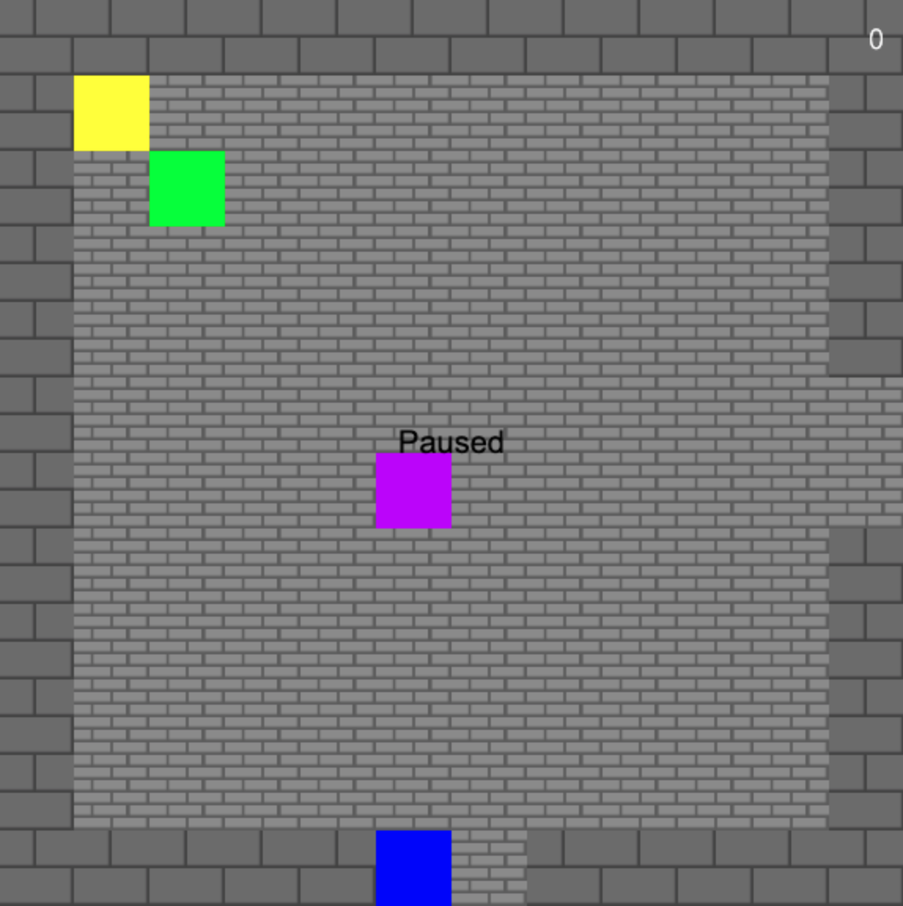
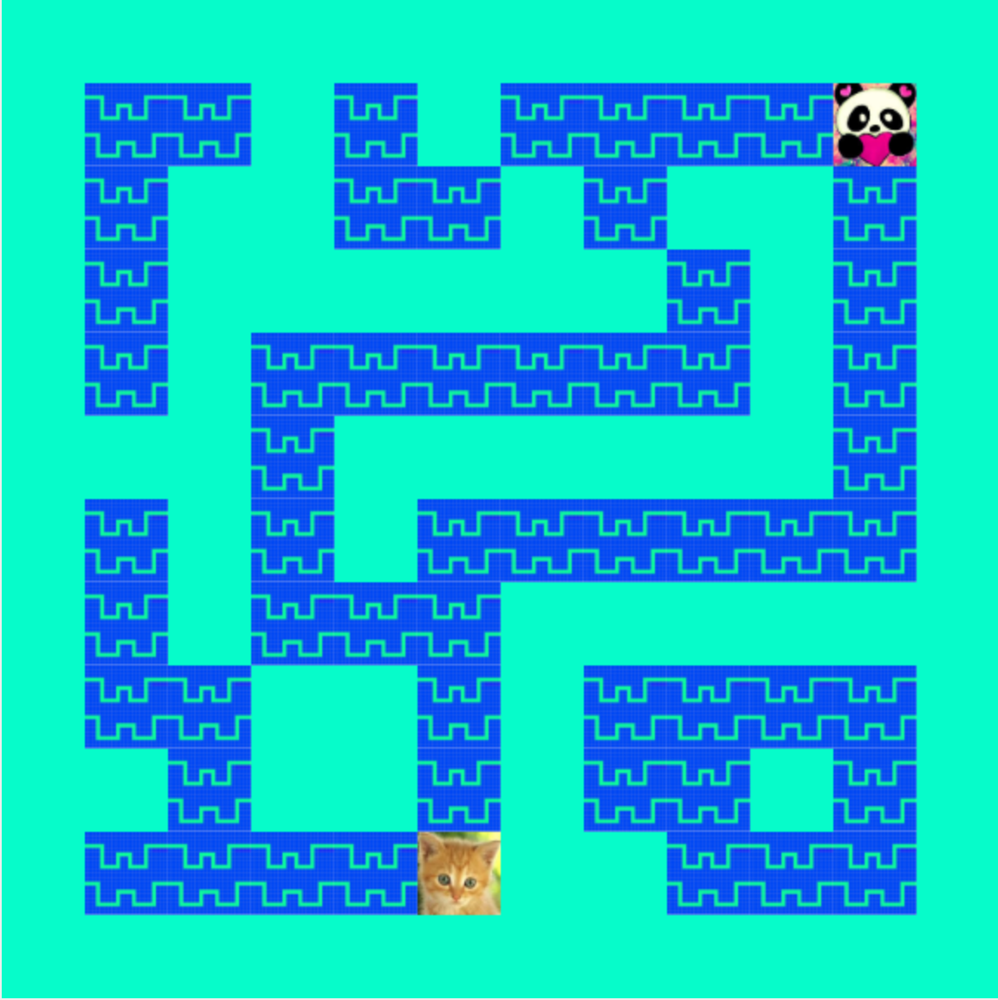
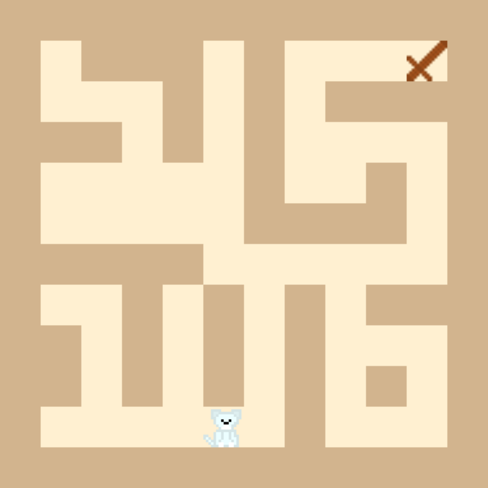
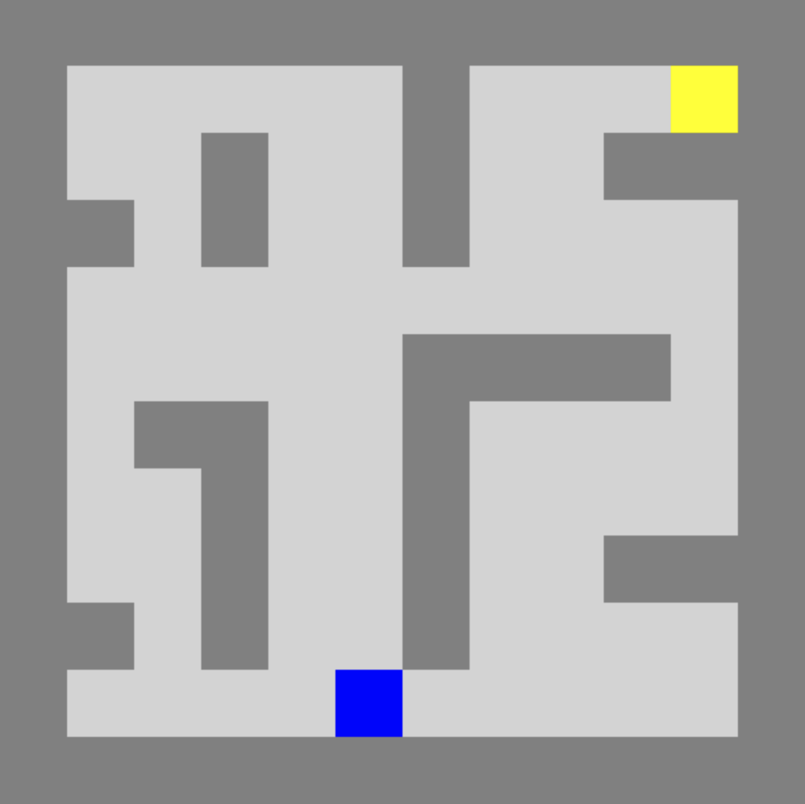
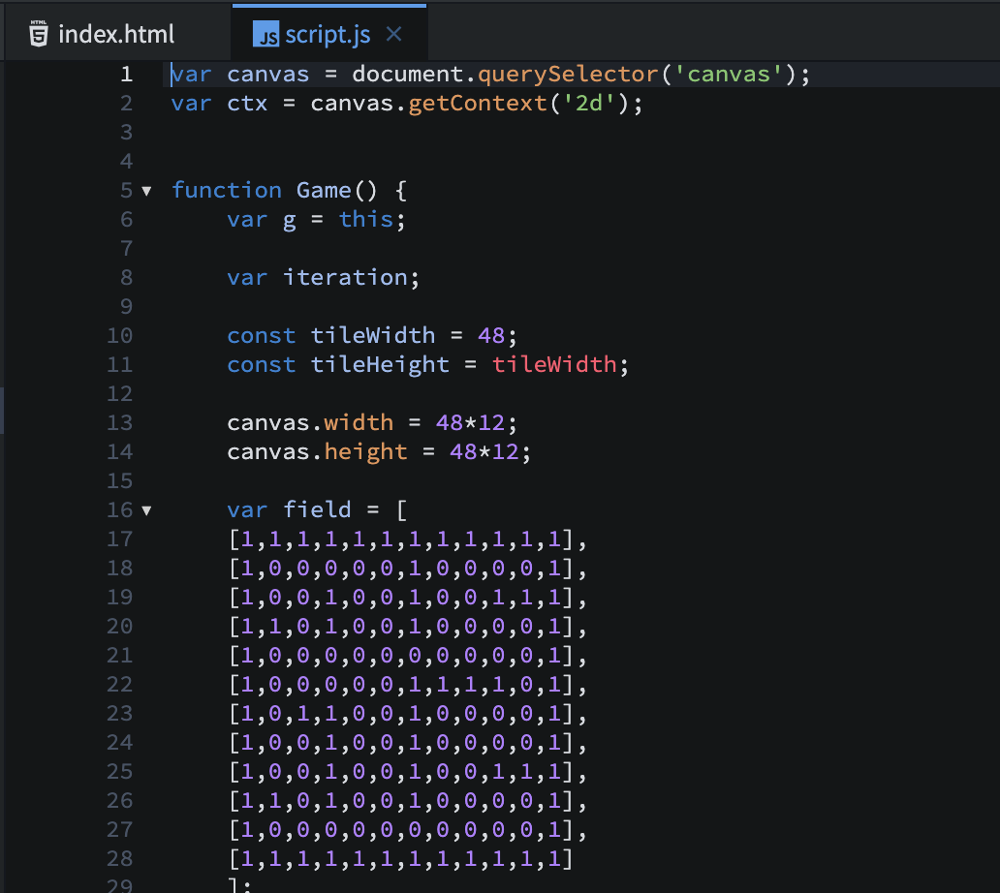
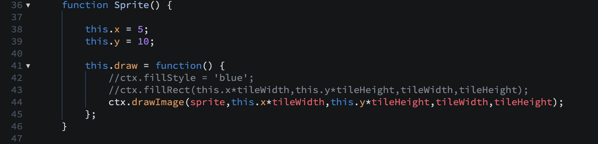
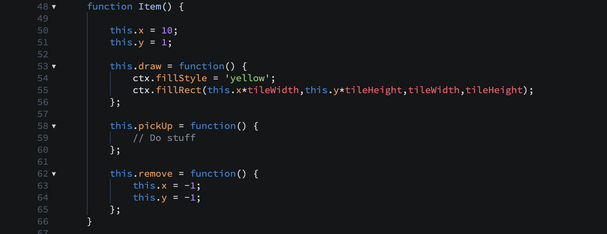

Student Game Development
Students began with a simple game engine where you could move a colored block around an HTML canvas maze. Once I opened up the code to them, they were free to experiment in whatever way they wanted. They could investigate by trial-and-error or ask me questions (or, like a pro coder, ask Google). This was no simplified coding exercise either, no drag-and-drop colored blocks; they used real Javascript in real, professional development tools: Goorm for a cloud-based editor and Github for source code control. These are not finished games, but all have playable features and are pretty cool to see.
Note: These games are not designed for mobile, as they require a keyboard.
Use the arrow keys to move.
These are not finished products. If you'd like to restart/reset the games, refresh the page.
Jackson
Jackson added several major and unexpected innovations to the game engine. The map has been expanded to multiple rooms. The rooms are partially randomly generated. There are four enemy types: normal, fast, ninja (it circles you), and exploding (don't get close to it!), each of which has a different AI. He also added a title screen, music (not available on all devices), and a score count.
How to play: You are the blue block. Avoid the enemies while trying to pick up the "item" (yellow block). Once you have the item, the enemies will run from you and you have to catch them. Catch all the enemies on a screen to advance to the next room.
Madi
Madi's unique development was adding a conversation mode. When you encounter another character, the character speaks and you get to choose your reply. You are an orange cat that walks on water. You must meet the panda.
How to play: Cross the maze to the panda character. When you contact the panda, a conversation will begin. Select your response with the mouse. Optionally, play music from the bar above the game.
Kenny
Kenny focused on sprite design, map colors, and map layout. Given a little more time, he'd like to introduce enemies, the sprites for which he's already designed. In this game you are the white cat hero. You must pick up the wooden sword to be armed against the (future) enemies.
How to play: Cross the maze to collect the wooden sword.
Original Engine
The first thing each student figured out was how to edit the map layout, which is represented in an array that visually reflects the output of the map. By changing a zero to a one, a floor tile becomes a wall and vis-versa.
The next innovation most students worked on was rendering a tile texture or character sprite instead of a colored block. This is done by replacing an html canvas rectangle with a canvas drawImage method and uploading and linking to an image resource in the project.
Beyond that, the students innovated largely on their own, moving into things like items, enemies, map expansion, music, title screen, etc.
